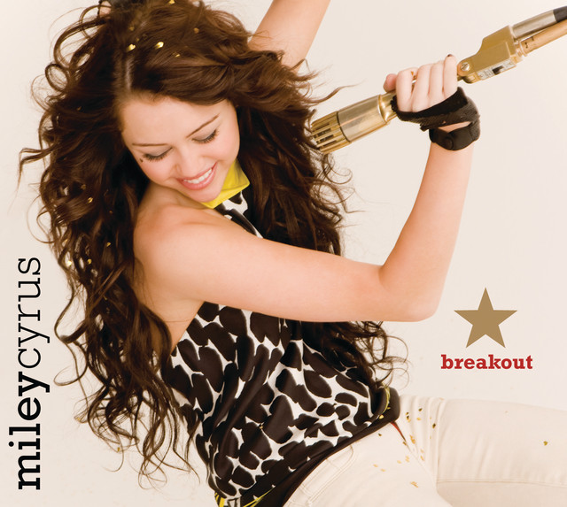

Algunos álbumes de Miley Cyrus:
1. Meet Miley Cyrus
El primer álbum de Miley Cyrus, que marca el inicio de su carrera como artista solista. Con canciones como "See You Again" y "The Way I Am", este disco combina elementos de pop y rock juvenil, convirtiéndose en un gran éxito entre sus seguidores.

2. Breakout
El segundo álbum de Miley Cyrus como artista solista, que marca un cambio en su estilo musical. Con un sonido más maduro y pop-rock, incluye éxitos como "Breakout" y "7 Things". Este disco refleja su transición hacia una imagen más adulta, consolidándose como una de las artistas más destacadas de la época.
3. Can't Be Tamed
En este álbum, Miley Cyrus da un giro radical hacia un sonido más electrónico y dance-pop, mostrando una imagen más audaz y rebelde. Con canciones como "Can't Be Tamed" y "Who Owns My Heart", el disco refleja su deseo de liberarse de las expectativas previas y consolidar su identidad como artista independiente.